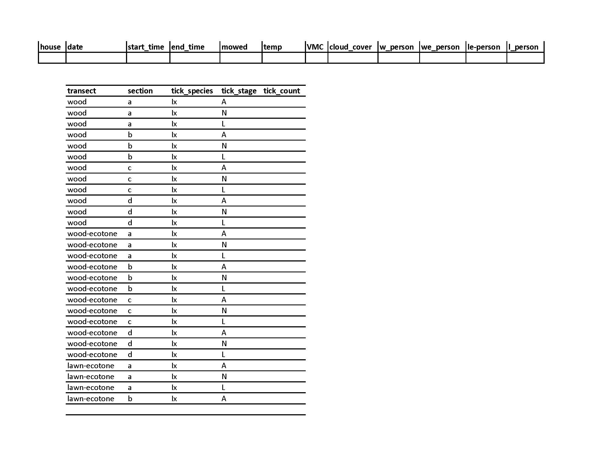

## Code to open the datasheets of the project
packages <- c("tidyverse"
, "cellranger"
, "data.table"
, "janitor"
, "purrr"
, "readxl")
## install packages if needed and open libraries
if (length(setdiff(packages, rownames(installed.packages()))) > 0) {
install.packages(setdiff(packages, rownames(installed.packages())),
dependencies = TRUE)}
invisible(lapply(packages, library, character.only = TRUE,
warn.conflicts = TRUE, quietly =TRUE))Data wrangling with field data
David Jansen
2023-10-19
Background
For the Terminix project of Zack student collected tick count data in the the yard of peoples houses. This data was collected on a standardize datasheet.
Background
Background
On the top of the datasheet there was a line for some metadata such as date, time, weather and name of people collecting the data.
The rest of the form had space to note the counts of 2 tick species in 3 different life stages. There were 4 transects and every zone has 4 sections. So it total there were 4 * 4 * 2 * 3 = 96 counts per yard per visit.
The files would be saved with as a csv file with the house number, date (mm_dd_yy) and experiment stage in the name. For example 012_07_12_23_pretreatment.
Background of code
The aim of the code I was writing was to open all the files, extract both the metadata and the count data and combine all of it into a large file.
An early test of the code on a few of the sheets went well and worked as expected.
The fun begins
- get R setup
- slightly complicated way of opening packages
- makes sharing code easier
find files
- Spaces in the path :-(
- Remember No Spaces :-)
The importance of consistency
# A tibble: 5 × 1
filename
<chr>
1 001_062623_posttreatment3.csv
2 013_072823_posttreatment2.csv
3 055_6_15_23_PostTreatment1.csv
4 063_06.22.2023_PostTreatment2.csv
5 015_7_19_23.csv dates are in many formats
this makes writing general code hard
For now I’ll work with these, but all fix (manually by Zack)
Lets open some data (1)
The files have a few lines with metadata.
These should not be loaded for count data
Using the skip option to exclude the first 4 lines
For the count data the first column is also not need.
Only the 2nd to 6th column contain data on tick counts
Lets open some data (2)
# A tibble: 96 × 5
transect section tick_species tick_stage tick_count
<chr> <chr> <chr> <chr> <dbl>
1 wood a Ix A 0
2 wood a Ix N 0
3 wood a Ix L 0
4 wood b Ix A 0
5 wood b Ix N 0
6 wood b Ix L 0
7 wood c Ix A 0
8 wood c Ix N 0
9 wood c Ix L 0
10 wood d Ix A 0
# ℹ 86 more rows- yeah that looks good, but…
Lets open some data (3)
# A tibble: 98 × 5
...2 ...3 ...4 ...5 ...6
<chr> <chr> <chr> <chr> <chr>
1 <NA> <NA> <NA> <NA> <NA>
2 transect section tick_species tick_stage tick_count
3 wood a Ix A 0
4 wood a Ix N 0
5 wood a Ix L 0
6 wood b Ix A N/A
7 wood b Ix N N/A
8 wood b Ix L N/A
9 wood c Ix A N/A
10 wood c Ix N N/A
# ℹ 88 more rows- what is happening here?
- extra lines of white space?
- Some troubleshooting will be needed
Metadata
Looking at the metadata for the same two files
# A tibble: 1 × 12
house date start_time end_time mowed temp VMC cloud_cover w_person
<dbl> <chr> <time> <time> <chr> <chr> <chr> <chr> <chr>
1 1 6/1523 09:05 09:24 No 58 (air) 21% Cloudy SA
# ℹ 3 more variables: we_person <chr>, `le-person` <chr>, l_person <chr># A tibble: 1 × 12
house date start_time end_time mowed temp VMC cloud_cover w_person
<dbl> <chr> <time> <time> <chr> <dbl> <dbl> <chr> <chr>
1 1 6/5/23 09:10 09:40 N 50 11 cloudy ML
# ℹ 3 more variables: we_person <chr>, `le-person` <chr>, l_person <chr>Looks ok and we will get back to the metadata later
Open all datafiles
- Aim: all datasheets and combine into one data file.
- We are going to make a function to read the data
all_datasheets <- list.files(path = sheet_folder)
read_data_v1 = function(filepath) { ## hint v1 is suggesting there are going to be more :-)
#print(filepath) ## can help to find issues
read_csv(filepath, ## path to specific file,
skip = 4, ## skip first 4 rows
col_select = c(2:6), ## select column 2 to 6
show_col_types = FALSE, ## don't show the message,,
name_repair = "minimal" ## don't try and repair names
)
}Reading data (v1)
tibble(datasheet = all_datasheets) %>%
mutate(path_to_sheet = paste0(sheet_folder, datasheet)) %>%
slice(c(1:2)) %>% ## lest first try it 2
mutate(data = map(.x = path_to_sheet, .f = read_data_v1)) %>%
select(-path_to_sheet) %>%
## counting lines as a quick check
mutate(nr_rows_in_tibble = map_dbl(.x = data, .f = nrow)) # A tibble: 2 × 3
datasheet data nr_rows_in_tibble
<chr> <list> <dbl>
1 001 07_07_2023.csv <tibble [96 × 5]> 96
2 001 6_15_23.csv <tibble [96 × 5]> 96!!! Yeah that worked !!!
Reading data (v1)
Now on all of them.
tibble(datasheet = all_datasheets) %>%
mutate(path_to_sheet = paste0(sheet_folder, datasheet)) %>%
mutate(data = map(.x = path_to_sheet, .f = read_data_v1)) %>%
mutate(nr_rows_in_tibble = map_dbl(.x = data, .f = nrow)) Error in `mutate()`:
ℹ In argument: `data = map(.x = path_to_sheet, .f = read_data_v1)`.
Caused by error in `map()`:
ℹ In index: 3.
Caused by error:
! Names can't be empty.
✖ Empty names found at locations 1, 2, 3, 4, and 5.Boo an error
Troubleshooting (1a)
- What is happening?
- Troubleshooting code/data
- Errors stop the running of code. This can make troubleshooting hard.
- The purrr package has a function that can keep code running.
- Temporarily give an alternative outcome.
Troubleshooting (1b)
- rerun code
- problem sheets have an empty tibble and 0 rows
tibble(datasheet = all_datasheets) %>%
slice(1:10) %>%
mutate(path_to_sheet = paste0(sheet_folder, datasheet)) %>%
mutate(data = map(.x = path_to_sheet, .f = read_data_possibly_v1)) %>%
mutate(nr_rows_in_tibble = map_dbl(.x = data, .f = nrow)) %>%
select(-path_to_sheet)# A tibble: 10 × 3
datasheet data nr_rows_in_tibble
<chr> <list> <dbl>
1 001 07_07_2023.csv <tibble [96 × 5]> 96
2 001 6_15_23.csv <tibble [96 × 5]> 96
3 001_060523_pretreatment.csv <tibble [0 × 0]> 0
4 001_062623_posttreatment3.csv <tibble [0 × 0]> 0
5 001_071423_posttreatment1.csv <tibble [0 × 0]> 0
6 001_071923_posttreatment2.csv <tibble [0 × 0]> 0
7 001_072823_posttreatment3.csv <tibble [0 × 0]> 0
8 001_080323_posttreatment8.csv <tibble [0 × 0]> 0
9 001_6_15_23_posttreatment1.csv <tibble [96 × 5]> 96
10 001_6_22_23_PostTreatment2.csv <tibble [0 × 0]> 0Troubleshooting (1c)
- All the ones with 0 have a problem
- Let’s have a look at on of them.
Troubleshooting (1b)
- extra lines of white space
- need to update the read function to deal with this
- after a lot of trial and error, I found the fread function from the data.table package could deal with this
Troubleshooting (1d)
read_data_v2 = function(filepath) {
## hint v2 is suggesting there are going to be more :-)
fread(filepath
, header = TRUE
, skip = "transect" ## only start reading file after transect
, select = 2:6 ## selected columns
, blank.lines.skip = TRUE ## skip and empty lines
) %>%
as_tibble()
}
read_data_possibly_v2 <- purrr::possibly(.f = read_data_v2, otherwise = tibble())Troubleshooting (1e)
tibble(datasheet = all_datasheets) %>%
slice(1:10) %>%
mutate(path_to_sheet = paste0(sheet_folder, datasheet)) %>%
mutate(data = map(.x = path_to_sheet, .f = read_data_possibly_v2)) %>%
mutate(nr_rows_in_tibble = map_dbl(.x = data, .f = nrow))# A tibble: 10 × 4
datasheet path_to_sheet data nr_rows_in_tibble
<chr> <chr> <list> <dbl>
1 001 07_07_2023.csv C://Users//dajanse… <tibble> 96
2 001 6_15_23.csv C://Users//dajanse… <tibble> 96
3 001_060523_pretreatment.csv C://Users//dajanse… <tibble> 96
4 001_062623_posttreatment3.csv C://Users//dajanse… <tibble> 96
5 001_071423_posttreatment1.csv C://Users//dajanse… <tibble> 96
6 001_071923_posttreatment2.csv C://Users//dajanse… <tibble> 96
7 001_072823_posttreatment3.csv C://Users//dajanse… <tibble> 96
8 001_080323_posttreatment8.csv C://Users//dajanse… <tibble> 96
9 001_6_15_23_posttreatment1.csv C://Users//dajanse… <tibble> 96
10 001_6_22_23_PostTreatment2.csv C://Users//dajanse… <tibble> 0- better but there is still an problem
Troubleshooting (2a)
- all files should be csv
tibble(datasheet = all_datasheets) %>%
slice(1:10) %>%
mutate(path_to_sheet = paste0(sheet_folder, datasheet)) %>%
mutate(data = map(.x = path_to_sheet, .f = read_data_possibly_v2)) %>%
mutate(nr_rows_in_tibble = map_dbl(.x = data, .f = nrow)) %>%
filter(nr_rows_in_tibble == 0) %>%
select(path_to_sheet) %>% pull() %>%
read_lines()[1] "<?xml version=\"1.0\" encoding=\"UTF-8\" standalone=\"yes\"?>"
[2] "<Types xmlns=\"http://schemas.openxmlformats.org/package/2006/content-types\"><Default Extension=\"rels\" ContentType=\"application/vnd.openxmlformats-package.relationships+xml\"/><Default Extension=\"xml\" ContentType=\"application/xml\"/><Override PartName=\"/xl/workbook.xml\" ContentType=\"application/vnd.openxmlformats-officedocument.spreadsheetml.sheet.main+xml\"/><Override PartName=\"/docProps/core.xml\" ContentType=\"application/vnd.openxmlformats-package.core-properties+xml\"/><Override PartName=\"/docProps/app.xml\" ContentType=\"application/vnd.openxmlformats-officedocument.extended-properties+xml\"/><Override PartName=\"/xl/worksheets/sheet1.xml\" ContentType=\"application/vnd.openxmlformats-officedocument.spreadsheetml.worksheet+xml\"/><Override PartName=\"/xl/theme/theme1.xml\" ContentType=\"application/vnd.openxmlformats-officedocument.theme+xml\"/><Override PartName=\"/xl/styles.xml\" ContentType=\"application/vnd.openxmlformats-officedocument.spreadsheetml.styles+xml\"/><Override PartName=\"/xl/sharedStrings.xml\" ContentType=\"application/vnd.openxmlformats-officedocument.spreadsheetml.sharedStrings+xml\"/></Types>"- but this looks like an excel file?
Troubleshooting (2a)

Troubleshooting (2b)
Troubleshooting (2c)
- Lets open it as an excel file
# A tibble: 96 × 7
transect section tick_species tick_stage tick_count ...6 ...7
<chr> <chr> <chr> <chr> <chr> <lgl> <lgl>
1 wood a Ix A NA NA NA
2 wood a Ix N NA NA NA
3 wood a Ix L NA NA NA
4 wood b Ix A NA NA NA
5 wood b Ix N NA NA NA
6 wood b Ix L NA NA NA
7 wood c Ix A 0 NA NA
8 wood c Ix N 0 NA NA
9 wood c Ix L 0 NA NA
10 wood d Ix A 0 NA NA
# ℹ 86 more rows- fun!! we have Excel files with a csv extension
- I’ll also share now that there are real Excel files with an xlsx extension
Troubleshooting (2d)
- To solve it we first need to know which files are:
- real csv
- real excel files
- excel files with csv extension
- We can use the purrr possible from earlier.
Troubleshooting (2e)
- With files are ‘fake’ csv files
excel_files_with_csv_extension <- tibble(datasheet = all_datasheets) %>%
mutate(path_to_sheet = paste0(sheet_folder, datasheet)) %>%
mutate(data = map(.x = path_to_sheet, .f = read_data_possibly_v2)) %>%
mutate(nr_rows_in_tibble = map_dbl(.x = data, .f = nrow)) %>%
## filter all the ones with 0s as these are mistakes
filter(nr_rows_in_tibble == 0) %>%
select(datasheet) %>% ## select only the datasheet names
pull() ## and pull these into a vector
excel_files_with_csv_extension[1:10] [1] "001_6_22_23_PostTreatment2.csv" "001_6_5_23_PreTreatment.csv"
[3] "001_7_14_23_PostTreatment5.csv" "001_7_7_23_PostTreatment4.csv"
[5] "002_6_22_23_PostTreatment2.csv" "002_6_5_23_PreTreatment.csv"
[7] "002_7_14_23_2ndposttreatment1.xlsx" "002_7_14_23_PostTreatment5.csv"
[9] "002_7_28_23_ControlWeek8.csv" "002_7_7_23_PostTreatment4.csv" There are 362 csv files that actually are excel files.
Troubleshooting (2f)
- Updates to the function to also load excel files
read_data_v3 = function(filetype, filepath) {
if(filetype == "csv") {
data.table::fread(filepath
, header = TRUE
, skip = "transect"
, select = 2:6
, blank.lines.skip = TRUE
)
} else {
read_excel(filepath, skip = 4) %>%
select(transect, section, tick_species, tick_stage, tick_count)
} ## end of else
} ## end of function
read_data_possibly_v3 <- purrr::possibly(.f = read_data_v3, otherwise = tibble())Troubleshooting (2d)
tibble(datasheet = all_datasheets) %>%
slice(1:10) %>%
mutate(path_to_sheet = paste0(sheet_folder, datasheet)) %>%
mutate(filetype = if_else(str_detect(datasheet, "csv"), "csv", "xlsx")) %>%
## if a file is part of the 'fake' list change the extension
mutate(real_filetype = if_else(condition =datasheet %in% excel_files_with_csv_extension
, true = 'xlsx'
, false = filetype)) %>%
mutate(data = map2(.x = real_filetype, ## map2 needs two inputs
.y = path_to_sheet,
.f = read_data_possibly_v3)) %>%
mutate(nr_rows_in_tibble = map_dbl(.x = data, .f = nrow)) %>%
select(- path_to_sheet)# A tibble: 10 × 5
datasheet filetype real_filetype data nr_rows_in_tibble
<chr> <chr> <chr> <list> <dbl>
1 001 07_07_2023.csv csv csv <dt> 96
2 001 6_15_23.csv csv csv <dt> 96
3 001_060523_pretreatment.csv csv csv <dt> 96
4 001_062623_posttreatment3.… csv csv <dt> 96
5 001_071423_posttreatment1.… csv csv <dt> 96
6 001_071923_posttreatment2.… csv csv <dt> 96
7 001_072823_posttreatment3.… csv csv <dt> 96
8 001_080323_posttreatment8.… csv csv <dt> 96
9 001_6_15_23_posttreatment1… csv csv <dt> 96
10 001_6_22_23_PostTreatment2… csv xlsx <tibble> 96Troubleshooting (2e)
- Looks like we are getting somewhere
- Next step is to combine all the sheets
combined_sheets <- tibble(datasheet = all_datasheets) %>%
mutate(path_to_sheet = paste0(sheet_folder, datasheet)) %>%
mutate(filetype = if_else(str_detect(datasheet, "csv"), "csv", "xlsx")) %>%
mutate(real_filetype = if_else(datasheet %in% excel_files_with_csv_extension,
'xlsx', filetype)) %>%
mutate(data = map2(.x = real_filetype, .y = path_to_sheet,
.f = read_data_possibly_v3)) %>%
mutate(nr_rows_in_tibble = map_dbl(.x = data, .f = nrow))Are we there?
Error in `list_unchop()`:
! Can't combine `x[[1]]$tick_count` <integer> and `x[[3]]$tick_count` <character>.- Unfortunately we have another sigh moment.
- Reason is that we have two data types in one column.
Quick reminder
The full content of columns in R need to be in same data type and units
character (e.g, “a”, “swc”)
numeric (real or decimal) (e.g, 2, 2.0)
logical (FALSE, TRUE)
integer (e.g, 2L, as.integer(3))
complex (e.g, 1 + 0i, 1 + 4i) <- These can be annoying
Troubleshooting (3a)
combined_sheets_temp <- combined_sheets %>%
mutate(temp_data = map(.x = data,
## turn all the columns to character
.f = mutate_all, as.character))
combined_sheets_temp %>%
select(datasheet, temp_data) %>%
unnest(cols = c(temp_data)) %>%
## turn the tick count column back to numeric
## if this doesn't work the cell will turn into NA
mutate(temp_count = as.numeric(tick_count)) %>%
filter(!is.na(tick_count)) %>%
filter(is.na(temp_count))# A tibble: 7,105 × 7
datasheet transect section tick_species tick_stage tick_count temp_count
<chr> <chr> <chr> <chr> <chr> <chr> <dbl>
1 001_060523_pr… wood b Ix A N/A NA
2 001_060523_pr… wood b Ix N N/A NA
3 001_060523_pr… wood b Ix L N/A NA
4 001_060523_pr… wood c Ix A N/A NA
5 001_060523_pr… wood c Ix N N/A NA
6 001_060523_pr… wood c Ix L N/A NA
7 001_060523_pr… wood d Ix A N/A NA
8 001_060523_pr… wood d Ix N N/A NA
9 001_060523_pr… wood d Ix L N/A NA
10 001_060523_pr… wood-ec… b Ix A N/A NA
# ℹ 7,095 more rowsTroubleshooting (3a)
What are the non-numeric values?
## ok there are cells that have different values then NA or a number
combined_sheets_temp %>%
select(datasheet, temp_data) %>%
unnest(cols = c(temp_data)) %>%
mutate(temp_count = as.numeric(tick_count)) %>% filter(is.na(temp_count)) %>%
select(tick_count) %>% distinct() %>% pull() [1] NA "N/A" "NA" "Na" "20+" "nA" "N.A" "1(M)" "1(F)"
[10] "1 (F)" "1pm" Troubleshooting (3b)
- Multiple NA values
- Tell R about these NA values
- We could use mutate, but better to adapt function.
read_data_v4 = function(filetype, filepath) {
if(filetype == "csv") {
data.table::fread(filepath , header = TRUE , skip = "transect"
, select = 2:6, blank.lines.skip = TRUE,
na.strings = c(NA, "N/A", "NA", "Na", "nA", "N.A"))
} else {
read_excel(filepath , skip = 4 ,
na = c("N/A", "NA", "Na", "nA", "N.A"),
.name_repair = "unique_quiet", progress = FALSE) %>%
select(transect, section, tick_species, tick_stage, tick_count)
}
}
read_data_possibly_v4 <- purrr::possibly(.f = read_data_v4,
otherwise = tibble())Troubleshooting (3c)
Lets look at the other values?
combined_sheets_temp %>%
select(datasheet, temp_data) %>%
unnest(cols = c(temp_data)) %>%
filter(tick_count %in% (c("20+", "1(M)", "1(F)", "1 (F)", "1pm")))# A tibble: 10 × 6
datasheet transect section tick_species tick_stage tick_count
<chr> <chr> <chr> <chr> <chr> <chr>
1 009_072823_posttreatment… wood b Ix L 20+
2 026 06_06_2023.csv lawn-ec… d De A 1(M)
3 030 06_06_2023 Pre_Treat… wood b De A 1(F)
4 031 06_06_2023 Pre_Treat… wood-ec… a De A 1(M)
5 048 6_12_23.csv wood a Ix A 1 (F)
6 048 6_6_23.csv lawn-ec… a Ix A 1 (F)
7 049 6_6_23.csv lawn-ec… c Ix A 1(M)
8 051_7_18_23.csv wood a Ix L 1pm
9 065 6_12_23.csv wood b Ix A 1 (F)
10 067 6_12_23.csv wood d Ix A 1 (F) Troubleshooting (3c) tbd
temp_exclude <- combined_sheets_temp %>%
select(datasheet, temp_data) %>%
unnest(cols = c(temp_data)) %>%
filter(tick_count %in% (c("20+", "1(M)", "1(F)", "1 (F)", "1pm"))) %>%
select(datasheet) %>%
pull()
temp_exclude [1] "009_072823_posttreatment3.csv" "026 06_06_2023.csv"
[3] "030 06_06_2023 Pre_Treatment.csv" "031 06_06_2023 Pre_Treatment.csv"
[5] "048 6_12_23.csv" "048 6_6_23.csv"
[7] "049 6_6_23.csv" "051_7_18_23.csv"
[9] "065 6_12_23.csv" "067 6_12_23.csv" Since there are just a few, it probably is easiest/best to fix by hand. To be save make a comment or keep a raw raw version.
Troubleshooting (3d)
combined_sheets %>%
filter(!(datasheet %in% temp_exclude)) %>% ## temp excluding the problem sheets
unnest(cols = c(data))# A tibble: 103,872 × 10
datasheet path_to_sheet filetype real_filetype transect section tick_species
<chr> <chr> <chr> <chr> <chr> <chr> <chr>
1 001 07_07… C://Users//d… csv csv wood a Ix
2 001 07_07… C://Users//d… csv csv wood a Ix
3 001 07_07… C://Users//d… csv csv wood a Ix
4 001 07_07… C://Users//d… csv csv wood b Ix
5 001 07_07… C://Users//d… csv csv wood b Ix
6 001 07_07… C://Users//d… csv csv wood b Ix
7 001 07_07… C://Users//d… csv csv wood c Ix
8 001 07_07… C://Users//d… csv csv wood c Ix
9 001 07_07… C://Users//d… csv csv wood c Ix
10 001 07_07… C://Users//d… csv csv wood d Ix
# ℹ 103,862 more rows
# ℹ 3 more variables: tick_stage <chr>, tick_count <dbl>,
# nr_rows_in_tibble <dbl>So after we fix the alternative numbers it should work.
Final function
## final function
read_data_coundata = function(filetype, filepath) {
if(filetype == "csv") {
data.table::fread(filepath , header = TRUE , skip = "transect"
, select = 2:6, blank.lines.skip = TRUE,
, na.strings = c(NA, "N/A", "NA", "Na", "nA", "N.A"))
} else {
read_excel(filepath, skip = 4,
na = c("N/A", "NA", "Na", "nA", "N.A"),
.name_repair = "unique_quiet", progress = FALSE) %>%
select(transect, section, tick_species, tick_stage, tick_count)
}
}Metadata
Metadata
- first two lines contain metadata regarding the houses
- besides the header row there is only 1 line of data
- as a reminder
# A tibble: 1 × 12
house date start_time end_time mowed temp VMC cloud_cover w_person
<dbl> <chr> <time> <time> <chr> <chr> <chr> <chr> <chr>
1 1 6/1523 09:05 09:24 No 58 (air) 21% Cloudy SA
# ℹ 3 more variables: we_person <chr>, `le-person` <chr>, l_person <chr>Metadata
- so only one row of data and we have need all 12 column
- we know now that not all files are simply csv with a fixed structure
- lets see if we can adapt the last version of the read_data function
read_metadata_v1 = function(filetype, filepath) { ## can we do it with 1 version?
if(filetype == "csv") {
data.table::fread(filepath, header = TRUE, blank.lines.skip = TRUE
, na.strings = c(NA, "N/A", "NA", "Na", "nA", "N.A")
#, .name_repair = "unique_quiet",
, check.names = TRUE
, nrows = 1) ## besides the header we only want 1 row
} else { read_excel(filepath
, na = c("N/A", "NA", "Na", "nA", "N.A")
, n_max = 1 )
}
}Metadata
- first with a few
temp_metadata <- tibble(datasheet = all_datasheets) %>%
mutate(path_to_sheet = paste0(sheet_folder, datasheet)) %>%
mutate(filetype = if_else(str_detect(datasheet, "csv"), "csv", "xlsx")) %>%
mutate(real_filetype = if_else(datasheet %in% excel_files_with_csv_extension,
'xlsx', filetype)) %>%
mutate(metadata = map2(.x = real_filetype, .y = path_to_sheet,
.f = read_metadata_v1))
temp_metadata %>%
slice(1:10) %>%
unnest(cols = c(metadata))Error in `list_unchop()`:
! Can't combine `x[[1]]$temp` <integer> and `x[[2]]$temp` <character>.Again a conflict between datatypes in a column
Troubleshooting (3b)
Troubleshooting (3b)
house | date | start_time | end_time | mowed | temp | VMC | cloud_cover | w_person | we_person | le.person | l_person | le-person |
|---|---|---|---|---|---|---|---|---|---|---|---|---|
1 | 7/7/2023 | 10:19 | 10:24 | No | 80 | 29% | Sunny | |||||
1 | 6/1523 | 9:05 | 9:24 | No | 58 (air) | 21% | Cloudy | SA | XL | CM | CM | |
1 | 6/5/23 | 9:10 | 9:40 | N | 50 | 11 | cloudy | ML | AP | CM | ZS | |
1 | 6/26/23 | 9:47 | 10:00 | N | 71 | 44 | cloudy | TZ | CM | CM | ML | |
1 | 7/14/23 | 1:15 | 1:20 | N | 88 | 25 | sunny | ZS | ZS | TZ | TZ | |
1 | 7/19/23 | 2:20 | 2:30 | 88 | 36 | ZS | EO | |||||
1 | 7/28/23 | 3:00 | 3:05 | N | 88 | 18 | sunny | TZ | TZ | TZ | DC | |
1 | 8/3/23 | 12:15 | 12:23 | N | 73 | 25 | sunny | ZS | CM | CM | ZS | |
1 | 6/15/23 | 9:05 | 9:24 | N | 58 | 21 | Cloudy | SA | XL | CM | CM | |
1 | 2023-06-22 | 1899-12-31 11:20:00 | 1899-12-31 11:30:00 | N | 89 | 30 | Sunny | TZ | AD | EO | EO |
- it only complained about temp, but I also see issues in other variables
- Any suggestions on what they are ?
Troubleshooting (3c)
house | date | start_time | end_time | mowed | temp | VMC | cloud_cover | w_person | we_person | le.person | l_person | le-person |
|---|---|---|---|---|---|---|---|---|---|---|---|---|
1 | 7/7/2023 | 10:19 | 10:24 | No | 80 | 29% | Sunny | |||||
1 | 6/1523 | 9:05 | 9:24 | No | 58 (air) | 21% | Cloudy | SA | XL | CM | CM | |
1 | 6/5/23 | 9:10 | 9:40 | N | 50 | 11 | cloudy | ML | AP | CM | ZS | |
1 | 6/26/23 | 9:47 | 10:00 | N | 71 | 44 | cloudy | TZ | CM | CM | ML | |
1 | 7/14/23 | 1:15 | 1:20 | N | 88 | 25 | sunny | ZS | ZS | TZ | TZ | |
1 | 7/19/23 | 2:20 | 2:30 | 88 | 36 | ZS | EO | |||||
1 | 7/28/23 | 3:00 | 3:05 | N | 88 | 18 | sunny | TZ | TZ | TZ | DC | |
1 | 8/3/23 | 12:15 | 12:23 | N | 73 | 25 | sunny | ZS | CM | CM | ZS | |
1 | 6/15/23 | 9:05 | 9:24 | N | 58 | 21 | Cloudy | SA | XL | CM | CM | |
1 | 2023-06-22 | 1899-12-31 11:20:00 | 1899-12-31 11:30:00 | N | 89 | 30 | Sunny | TZ | AD | EO | EO |
Troubleshooting (3d)
- lets go ahead and run open all the data
- data is still all character
- do we have big issues?
- or just a few that we can fix manually
First it seem to have 2 extra columns lets check those first
# A tibble: 5 × 20
datasheet path_to_sheet filetype real_filetype metadata house date start_time
<chr> <chr> <chr> <chr> <list> <chr> <chr> <chr>
1 001 07_0… C://Users//d… csv csv <dt> 1 7/7/… 10:19
2 001 6_15… C://Users//d… csv csv <dt> 1 6/15… 9:05
3 001_0605… C://Users//d… csv csv <dt> 1 6/5/… 9:10
4 001_0626… C://Users//d… csv csv <dt> 1 6/26… 9:47
5 001_0714… C://Users//d… csv csv <dt> 1 7/14… 1:15
# ℹ 12 more variables: end_time <chr>, mowed <chr>, temp <chr>, VMC <chr>,
# cloud_cover <chr>, w_person <chr>, we_person <chr>, le.person <chr>,
# l_person <chr>, `le-person` <chr>, Temp <chr>, ...1 <chr>Troubleshooting (3e)
# A tibble: 1 × 4
datasheet house temp Temp
<chr> <chr> <chr> <chr>
1 018_6_16_23_posttreatment1.csv 18 <NA> 81 Ok, so Temp is temp, lets fix it
Troubleshooting (3f)
Now the checking …1 and fixing it.
# A tibble: 4 × 19
datasheet path_to_sheet filetype real_filetype metadata house date start_time
<chr> <chr> <chr> <chr> <list> <chr> <chr> <chr>
1 022_6_22… C://Users//d… xlsx xlsx <tibble> <NA> 6_22… 1899-12-3…
2 024_6_23… C://Users//d… xlsx xlsx <tibble> <NA> 6_23… 1899-12-3…
3 026_6_22… C://Users//d… xlsx xlsx <tibble> <NA> 6_22… 1899-12-3…
4 027_6_22… C://Users//d… xlsx xlsx <tibble> <NA> 6_22… 1899-12-3…
# ℹ 11 more variables: end_time <chr>, mowed <chr>, temp <chr>, VMC <chr>,
# cloud_cover <chr>, w_person <chr>, we_person <chr>, le.person <chr>,
# l_person <chr>, `le-person` <chr>, ...1 <chr># A tibble: 4 × 3
datasheet house ...1
<chr> <chr> <chr>
1 022_6_22_23_posttreatment2.xlsx <NA> 22
2 024_6_23_23_posttreatment2.xlsx <NA> 24
3 026_6_22_23_posttreatment2.xlsx <NA> 26
4 027_6_22_23_posttreatment2.xlsx <NA> 27 Troubleshooting (3g)
- Next we check why not all temp is numeric
Error in `mutate()`:
ℹ In argument: `temp_numeric = as.numeric(temp)`.
Caused by error:
! invalid multibyte string at '<a1> F'- I had no idea what that means
- has something to do with a non standard character (thanks Google)
- you can find them by looking at character length
Troubleshooting (3g)
as.numeric_possible <- possibly(.f = as.numeric, otherwise = 999)
step2 %>% mutate(temporal_temp = map_dbl(.x = temp, .f = as.numeric_possible)) %>%
select(datasheet, house, temp, temporal_temp) %>%
filter(temporal_temp == 999)# A tibble: 45 × 4
datasheet house temp temporal_temp
<chr> <chr> <chr> <dbl>
1 029_06.27.2023_PostTreatment3.csv 29 83� F 999
2 033_06.27.2023_PostTreatment3.csv 33 82� F 999
3 034_06.22.2023_PostTreatment2.csv 34 84� F 999
4 035_06.22.2023_PostTreatment2.csv 35 81� F 999
5 036_06.22.2023_PostTreatment2.csv 36 83� F 999
6 037_06.22.2023_PostTreatment2.csv 37 81� F 999
7 038_06.22.2023_PostTreatment2.csv 38 81� F 999
8 039_06.22.2023_PostTreatment2.csv 39 88� F 999
9 040_06.21.2023_PostTreatment2.csv 40 75� F 999
10 041_06.21.2023_PostTreatment2.csv 41 77� F 999
# ℹ 35 more rows- The question mark is a subscript i.
- This is a tricky one to solve unless you go into all those datasheets and fix it,
Troubleshooting (3h)
- ut I noticed (using View) that none of the temperatures in the problem sheets were above 99.
- So we could just take the first 2 digits
step2 %>%
mutate(temporal_temp = map_dbl(.x = temp, .f = as.numeric_possible)) %>%
select(datasheet, house, temp, temporal_temp) %>%
filter(!is.na(temp)) %>%
filter(temporal_temp == 999 | is.na(temporal_temp)) %>%
mutate(temp_numeric = as.numeric(if_else(condition = temporal_temp == 999 | is.na(temporal_temp),
true = str_sub(string = temp, 1, 2),
false = temp))) %>%
slice(1:10)# A tibble: 10 × 5
datasheet house temp temporal_temp temp_numeric
<chr> <chr> <chr> <dbl> <dbl>
1 001 6_15_23.csv 1 58 (air) NA 58
2 019 07_07_2023.csv 19 Sunny NA NA
3 024_06.29.2023_PostTreatment3.csv 24 81° F NA 81
4 025_06.29.2023_PostTreatment3.csv 25 85° F NA 85
5 028_6_16_23_posttreatment1.csv 28 Pt Cloudy NA NA
6 029_06.27.2023_PostTreatment3.csv 29 83� F 999 83
7 033_06.27.2023_PostTreatment3.csv 33 82� F 999 82
8 034 06_06_2023 Pre_Treatment .csv 34 81-86 NA 81
9 034_06.22.2023_PostTreatment2.csv 34 84� F 999 84
10 034_06.29.2023_PostTreatment3.csv 34 88° F NA 88Next VMC
# A tibble: 282 × 22
datasheet path_to_sheet filetype real_filetype metadata house date
<chr> <chr> <chr> <chr> <list> <chr> <chr>
1 001 07_07_2023.csv C://Users//da… csv csv <dt> 1 7/7/…
2 001 6_15_23.csv C://Users//da… csv csv <dt> 1 6/15…
3 002 07_07_2023.csv C://Users//da… csv csv <dt> 2 7/7/…
4 002 6_15_23.csv C://Users//da… csv csv <dt> 2 6/15…
5 004 07_07_2023.csv C://Users//da… csv csv <dt> 4 7/7/…
6 006 07_06_2023.csv C://Users//da… csv csv <dt> 6 7/6/…
7 006 07_18_2023.csv C://Users//da… csv csv <dt> 6 7/18…
8 007 07_07_2023.csv C://Users//da… csv csv <dt> 7 7/7/…
9 008 07_06_2023.csv C://Users//da… csv csv <dt> 8 7/6/…
10 008 07_18_2023.csv C://Users//da… csv csv <dt> 8 7/18…
# ℹ 272 more rows
# ℹ 15 more variables: start_time <chr>, end_time <chr>, mowed <chr>,
# temp <chr>, VMC <chr>, cloud_cover <chr>, w_person <chr>, we_person <chr>,
# le.person <chr>, l_person <chr>, `le-person` <chr>, temporal_temp <dbl>,
# temp_numeric <dbl>, temp_C <dbl>, VMC_numeric <dbl>## see if we remove % sign we fix the issue
step3 %>%
mutate(VMC_numeric = as.numeric(str_remove_all(string = VMC, pattern = "%"))) %>%
filter(!is.na(VMC) & is.na(VMC_numeric)) %>% select(datasheet, contains("VMC"))# A tibble: 3 × 3
datasheet VMC VMC_numeric
<chr> <chr> <dbl>
1 057 06_07_2023.csv 14:R 42:L NA
2 057 6_7_23.csv 14 (R) 42 (L) NA
3 057_060723_pretreatment.csv 14% right, 42% left NAFinally dates and times
step4 %>%
select(datasheet, date) %>%
mutate(date_ymd = mdy(date)) %>%
mutate(date_ymd = if_else(is.na(date_ymd), ymd(date), date_ymd)) %>%
filter(is.na(date_ymd))# A tibble: 4 × 3
datasheet date date_ymd
<chr> <chr> <date>
1 001 6_15_23.csv 6/1523 NA
2 037_06.15.2023_PostTreatment1.csv 06/15/20223 NA
3 055 6_7_23.csv 7-Jun NA
4 060 06_12_2023.csv 12-Jun NA - Few left that would be easiest fix mannually.
- Almost there. Just times left
Fixing Times (1)
(step4a <- step4 %>%
filter(!is.na(start_time) | !is.na(end_time)) %>%
select(datasheet, start_time, end_time) %>%
mutate(start_time_hm = hm(start_time),
end_time_hm = hm(end_time)))# A tibble: 1,080 × 5
datasheet start_time end_time start_time_hm end_time_hm
<chr> <chr> <chr> <Period> <Period>
1 001 07_07_2023.csv 10:19 10:24 10H 19M 0S 10H 24M 0S
2 001 6_15_23.csv 9:05 9:24 9H 5M 0S 9H 24M 0S
3 001_060523_pretreatment.csv 9:10 9:40 9H 10M 0S 9H 40M 0S
4 001_062623_posttreatment3.csv 9:47 10:00 9H 47M 0S 10H 0M 0S
5 001_071423_posttreatment1.csv 1:15 1:20 1H 15M 0S 1H 20M 0S
6 001_071923_posttreatment2.csv 2:20 2:30 2H 20M 0S 2H 30M 0S
7 001_072823_posttreatment3.csv 3:00 3:05 3H 0M 0S 3H 5M 0S
8 001_080323_posttreatment8.csv 12:15 12:23 12H 15M 0S 12H 23M 0S
9 001_6_15_23_posttreatment1.csv 9:05 9:24 9H 5M 0S 9H 24M 0S
10 001_6_22_23_PostTreatment2.csv 1899-12-31… 1899-12… NA NA
# ℹ 1,070 more rowsFixing Times (2)
- some issues left
step4 %>%
select(datasheet, start_time, end_time) %>%
pivot_longer(names_to = "time_group", values_to = "time", cols = c(start_time:end_time)) %>%
filter(!is.na(time)) %>%
mutate(time_hm = hm(time)) %>%
filter(is.na(time_hm)) %>%
mutate(time_hm = if_else(!is.na(time_hm), time_hm, hms(str_remove(time, "1899-12-31")))) %>%
filter(is.na(time_hm)) # A tibble: 2 × 4
datasheet time_group time time_hm
<chr> <chr> <chr> <Period>
1 043_6_15_23_posttreatment1.xlsx start_time 11 NA
2 056_6_15_23_posttreatment1.xlsx end_time 1 NA step4a %>%
mutate(start_time_hm = hms(str_remove(start_time, "1899-12-31")),
end_time_hm = hms(str_remove(end_time, "1899-12-31")))
filter(!is.na(start_time) & is.na(start_time_hm))
#!is.na(end_time) & is.na(end_time_hm)))
## fix these by hand
# final_metadata <- step5 %>% mutate(start_time_hm = hm(start_time), end_time_hm = hm(end_time)) %>% mutate(start = str_remove(start_time, "1899-12-31"), end = str_remove(end_time, "1899-12-31")) %>% mutate(start_time_hm = if_else(is.na(start_time_hm), hms(start),start_time_hm), end_time_hm = if_else(is.na(end_time_hm), hms(end),end_time_hm))
## need to fix some of the column names
#full_count_dataset %>% inner_join(final_metadata) \## this won't work, because the errors that are still in the datasetUse cleaned up dataset
updated_sheet_folder = "C://Users//dajansen3//Box//EC 2023 data by housecode//"
all_datasheets_cleaned <- list.files(updated_sheet_folder, all.files = TRUE, recursive = TRUE, pattern = "csv")
excel_files_with_csv_extension <-tibble(datasheet = all_datasheets_cleaned) %>%
mutate(path_to_sheet = paste0(updated_sheet_folder, datasheet)) %>%
mutate(filetype = if_else(str_detect(datasheet, "csv"), "csv", "xlsx")) %>%
mutate(data = map(.x = path_to_sheet, .f = read_data_possibly_v2)) %>%
mutate(nr_rows_in_tibble = map_dbl(.x = data, .f = nrow)) %>%
filter(nr_rows_in_tibble == 0) %>%
select(datasheet) %>%
pull()
combined_cleaned_sheets <- tibble(datasheet = all_datasheets_cleaned) %>%
slice(c(175, 190)) %>%
mutate(path_to_sheet = paste0(updated_sheet_folder, datasheet)) %>%
mutate(filetype = if_else(str_detect(datasheet, "csv"), "csv", "xlsx")) %>%
mutate(real_filetype = if_else(datasheet %in% excel_files_with_csv_extension, 'xlsx', filetype)) %>%
mutate(data = map2(.x = real_filetype, .y = path_to_sheet, .f = read_data_possibly_v4)) %>%
mutate(nr_row_on_sheet = map_dbl(.x = data, .f = nrow))
full_count_dataset <- combined_cleaned_sheets %>% unnest(cols = c(data))
full_count_dataset %>% distinct(tick_count)# A tibble: 2 × 1
tick_count
<dbl>
1 NA
2 0tibble(datasheet = all_datasheets_cleaned) %>%
mutate(path_to_sheet = paste0(updated_sheet_folder, datasheet)) %>%
mutate(filetype = if_else(str_detect(datasheet, "csv"), "csv", "xlsx")) %>%
mutate(real_filetype = if_else(datasheet %in% excel_files_with_csv_extension, 'xlsx', filetype)) %>%
mutate(data = map2(.x = real_filetype, .y = path_to_sheet, .f = read_metadata_v1)) %>%
mutate(nr_row_on_sheet = map_dbl(.x = data, .f = nrow))# A tibble: 555 × 6
datasheet path_to_sheet filetype real_filetype data nr_row_on_sheet
<chr> <chr> <chr> <chr> <list> <dbl>
1 001/001_2023_0… C://Users//d… csv xlsx <tibble> 1
2 001/001_2023_0… C://Users//d… csv csv <dt> 1
3 001/001_2023_0… C://Users//d… csv xlsx <tibble> 1
4 001/001_2023_0… C://Users//d… csv csv <dt> 1
5 001/001_2023_0… C://Users//d… csv csv <dt> 1
6 001/001_2023_0… C://Users//d… csv xlsx <tibble> 1
7 001/001_2023_0… C://Users//d… csv csv <dt> 1
8 001/001_2023_0… C://Users//d… csv csv <dt> 1
9 001/001_2023_0… C://Users//d… csv csv <dt> 1
10 002/002_2023_0… C://Users//d… csv csv <dt> 1
# ℹ 545 more rowsData control
- there should be 68 houses * 20 sheets = 1360
- filenames contains some info
- house
- data
- treatment
## before dealing with all these problems we should check if we have all the data.
house_sheet_info = tibble(datasheet = all_datasheets_cleaned) %>%
mutate(info = str_remove_all(datasheet, pattern = '.csv|.xlsx')) %>%
mutate(info = str_remove_all(info, pattern = '\\(.*')) %>%
mutate(info = str_squish(info)) %>%
separate(info, into = c(NA, "house", "year", "month", "day", "treatment"), remove = FALSE) %>%
mutate(completed = complete.cases(.))
house_sheet_info %>%
mutate(date = ymd(paste(year, month, day, sep = "-"))) %>%
group_by(house, date) %>%
summarise(n())# A tibble: 554 × 3
# Groups: house [66]
house date `n()`
<chr> <date> <int>
1 001 2023-06-05 1
2 001 2023-06-15 1
3 001 2023-06-22 1
4 001 2023-06-26 1
5 001 2023-07-07 1
6 001 2023-07-14 1
7 001 2023-07-19 1
8 001 2023-07-28 1
9 001 2023-08-03 1
10 002 2023-06-05 1
# ℹ 544 more rowshouse_sheet_info %>%
group_by(house, treatment) %>%
summarise(nr_sheets = n()) %>%
ungroup() %>%
complete(house, treatment) %>%
mutate(treatment = forcats::fct_relevel(treatment, "pretreatment")) %>%
mutate(nr_sheets = as_factor(nr_sheets)) %>%
ggplot(aes(x=treatment, y = house, fill = nr_sheets)) +
geom_tile() +
scale_fill_manual(values=c("#fdae61", "#fee08b", "#e6f598", "#abdda4"), na.value = "grey90") +
cowplot::theme_cowplot() +
theme(axis.text.x=element_text(angle=45,hjust=1)) #But we have length(list.files(path = sheet_folder)) (68 * 20) - length(list.files(path = sheet_folder)) ## are missing
tibble(filename = list.files(path = sheet_folder)) %>% mutate(house = as.numeric(str_sub(filename, 1, 3))) %>%
group_by(house) %>% summarise(nr_sheets = n()) %>% summarise(max_nr_sheets = max(nr_sheets), min_nr_sheets = min(nr_sheets), median_nr_sheets = median(nr_sheets))
the warning is because naming was not consistent
tibble(filename = list.files(path = sheet_folder)) %>% mutate(house = as.numeric(str_sub(filename, 1, 3))) %>%
group_by(house) %>% summarise(nr_sheets = n()) %>% group_by(nr_sheets) %>% summarise(nr_houses = n()) %>% arrange(-nr_sheets)
quick side step
note that here there are NA values, because the tick count was not filled out
are these all 0 or are the not sampled?
[1] "data_wraggling_with_field_data_to_be_deleted.R"
[2] "data_wragling_of_field_data.qmd"
[3] "data_wragling_of_field_data.rmarkdown"
[4] "data_wragling_of_field_data_files"
[5] "figures"
[6] "git_version_control.qmd"
[7] "good_data_practises.qmd"
[8] "MCEVBD_interview"
[9] "MCEVBD_interview.qmd"
[10] "pdf"
[11] "reproducibility_workshop.qmd"